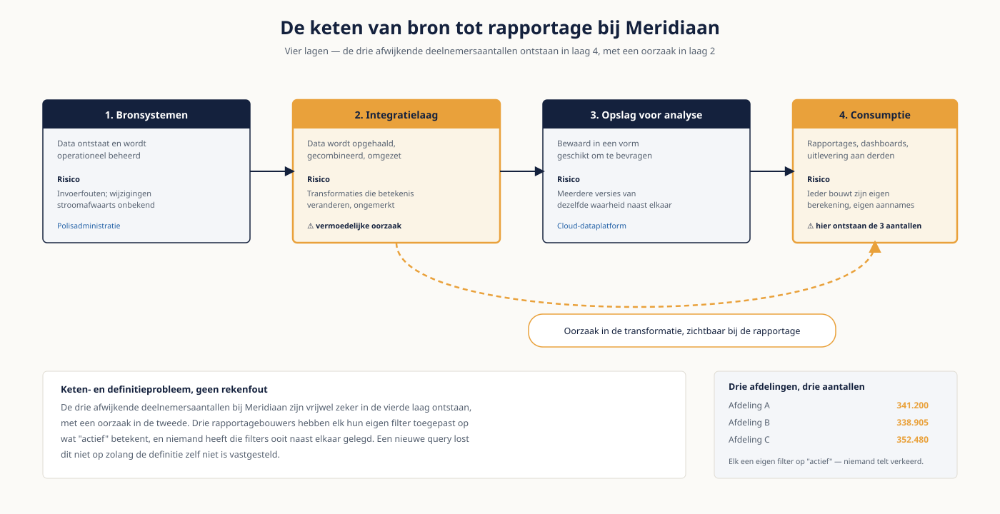

Deel 3 — Opslag, operations en datastromen
Niveau 1 — Fundament · Reader
Voorbereiding, geen vervanging
Deze cursusmap is onafhankelijk ontwikkeld door Ductus B.V. Ductus is niet gelieerd aan, geaccrediteerd door of goedgekeurd door DAMA International, IIBA, IAPP, de EDM Association of Microsoft.
Dit materiaal bereidt voor op de genoemde examens en vervangt het officiële examenmateriaal niet. Bodies of knowledge, handboeken en examenblueprints worden hier niet gereproduceerd; deelnemers schaffen die bronnen zelf aan.
Alle genoemde merken zijn eigendom van hun respectieve houders. Examengegevens gecontroleerd in augustus 2026 — verifieer vóór inschrijving bij de bron.
1. Waar dit deel over gaat
In deel 2 stond data stil: een model legt vast wat iets betekent. In dit deel gaat data bewegen. Van het scherm waarop een medewerker iets invult naar het systeem dat het opslaat, via een koppelvlak naar een platform, en uiteindelijk naar het getal in een rapportage waar een bestuurder een besluit op baseert.
Die keten is waar de meeste onverklaarbare verschillen ontstaan. Als drie afdelingen bij Meridiaan verschillende deelnemersaantallen rapporteren, is dat zelden omdat iemand slecht kan tellen. Het is omdat de drie op verschillende momenten uit verschillende bronnen hebben geput, via routes die niemand meer helemaal kan volgen. Wie de keten kan tekenen, kan het verschil verklaren.
Ook dit deel gaat over lezen en begrijpen, niet over bouwen. Je hoeft geen pipeline te kunnen schrijven. Je moet wel de goede vragen kunnen stellen aan degene die dat wel doet — en herkennen wanneer een antwoord niet klopt.
Leerdoelen
- Je legt uit waarom operationele en analytische systemen fundamenteel anders zijn ingericht.
- Je kiest bij een gebruikssituatie een passende opslagvorm en verantwoordt die keuze.
- Je tekent op hoofdlijnen de keten van bron tot rapportage en benoemt per schakel het risico.
- Je onderscheidt datawarehouse, data lake en lakehouse en benoemt de valkuil van elk.
- Je kiest tussen ETL en ELT, en tussen batch, streaming en change data capture.
- Je kiest een integratiepatroon bij een concreet scenario en benoemt het bijbehorende risico.
- Je legt uit wat RTO en RPO betekenen en waarom die keuze een businessbeslissing is.
2. Twee werelden: operationeel en analytisch
Vrijwel elk datalandschap valt uiteen in twee werelden die tegengestelde eisen stellen. Wie dat onderscheid niet maakt, stelt vragen die niet te beantwoorden zijn — bijvoorbeeld waarom een rapportage niet realtime kan.
| Operationeel (OLTP) | Analytisch (OLAP) | |
|---|---|---|
| Doel | Het werk van vandaag ondersteunen | Sturen, verantwoorden, analyseren |
| Typische handeling | Eén polis muteren | Alle polissen van drie jaar optellen |
| Optimalisatie | Snel schrijven, consistentie bewaken | Snel lezen over grote volumes |
| Structuur | Genormaliseerd | Vaak bewust gedenormaliseerd |
| Historie | Meestal alleen de huidige stand | Juist het verloop over tijd |
| Bij Meridiaan | De polisadministratie | Het cloud-dataplatform |
Het gevolg voor je werk: een vraag als "hoeveel actieve deelnemers hadden wij op 1 januari vorig jaar" is in het operationele systeem vaak onbeantwoordbaar, omdat dat systeem alleen weet hoe het nú is. Dat is geen tekortkoming maar een ontwerpkeuze. De analytische wereld bestaat precies om die vraag wél te kunnen beantwoorden.
De vraag die veel discussies beëindigt
Vraag bij elk verzoek om een rapportage: over welk moment gaat dit? De stand van nu, of de stand van toen? Wie dat onderscheid vroeg maakt, voorkomt de helft van de latere verwarring over cijfers die "niet kloppen".
3. Opslagvormen
Relationele databases zijn niet de enige optie meer, en de keuze is geen mode maar een afweging tussen structuur en flexibiliteit.
| Vorm | Sterk in | Voorbeeld bij Meridiaan | Zwak in |
|---|---|---|---|
| Relationeel | Vaste structuur, consistentie, complexe bevragingen | De polisadministratie | Snel wijzigende of onvoorspelbare structuur |
| Document | Wisselende structuur per record | Berichten uit het pensioenportaal | Consistentie afdwingen over records heen |
| Kolomgeoriënteerd | Optellen en filteren over enorme volumes | Het analytische platform | Losse records muteren |
| Key-value | Zeer snel opzoeken op één sleutel | Sessiegegevens van het portaal | Alles wat verder gaat dan opzoeken |
| Graaf | Verbanden en netwerken doorzoeken | Relaties tussen deelnemer, partner en werkgever | Grote aggregaties |
| Object | Grote bestanden goedkoop bewaren | Gescande formulieren en correspondentie | Bevragen op inhoud |
De praktijkregel is eenvoudiger dan de brochures suggereren: begin relationeel tenzij er een aanwijsbare reden is om dat niet te doen. Die reden is meestal het volume, de vorm van de bevraging of het feit dat de structuur per record verschilt.
4. De keten van bron tot rapportage
Vrijwel elk landschap heeft dezelfde vier lagen. De namen verschillen per organisatie; de functies niet.
| Laag | Wat er gebeurt | Typisch risico |
|---|---|---|
| Bronsystemen | Data ontstaat en wordt operationeel beheerd | Invoerfouten; wijzigingen die stroomafwaarts onbekend zijn |
| Integratielaag | Data wordt opgehaald, gecombineerd en omgezet | Transformaties die betekenis veranderen zonder dat iemand het merkt |
| Opslag voor analyse | Data wordt bewaard in een vorm die geschikt is om te bevragen | Meerdere versies van dezelfde waarheid naast elkaar |
| Consumptie | Rapportages, dashboards, uitlevering aan derden | Ieder bouwt zijn eigen berekening op eigen aannames |
De drie afwijkende deelnemersaantallen bij Meridiaan zijn vrijwel zeker in de vierde laag ontstaan, met een oorzaak in de tweede. Drie rapportagebouwers hebben elk hun eigen filter toegepast op wat "actief" betekent, en niemand heeft die filters ooit naast elkaar gelegd. Het is een keten- en definitieprobleem, geen rekenfout.

5. Warehouse, lake en lakehouse
| Vorm | Kern | Sterkte | Valkuil |
|---|---|---|---|
| Datawarehouse | Gestructureerde, gemodelleerde opslag voor sturing | Betrouwbaar, uitlegbaar, geschikt voor verantwoording | Traag aan te passen; nieuwe bron kost weken |
| Data lake | Ruwe data in oorspronkelijke vorm bewaren | Alles is er, ook wat je nu nog niet nodig hebt | Wordt een moeras zodra metadata en eigenaarschap ontbreken |
| Lakehouse | Ruwe opslag met daarop een gestructureerde laag | Combineert flexibiliteit met bevraagbaarheid | Vereist discipline die veel organisaties niet hebben |
De veelgebruikte gelaagde inrichting — een ruwe laag, een geschoonde laag en een laag die klaar is voor gebruik — is minder een technologie dan een afspraak. De waarde zit erin dat je bij elk getal kunt terugredeneren naar de bron. Zonder die discipline is het onderscheid tussen de lagen alleen een mappenstructuur.
Wat het echte verschil maakt
Het verschil tussen een lake en een moeras is niet de technologie maar het bestaan van metadata en eigenaarschap. Dat is precies het onderwerp van deel 8 en 13 — en de reden waarom platformkeuzes zelden de oorzaak zijn van datachaos.
6. Feiten en dimensies
Analytische opslag wordt vaak dimensioneel gemodelleerd. Voor niveau 1 volstaat het onderscheid tussen twee soorten tabellen.
- Een feitentabel bevat de meetbare gebeurtenissen: premiebetalingen, mutaties, uitkeringen. Veel rijen, weinig kolommen, altijd een getal dat je kunt optellen.
- Een dimensietabel bevat de context waarmee je die feiten wilt uitsplitsen: deelnemer, werkgever, regeling, tijd. Weinig rijen, veel kolommen, beschrijvend van aard.
De vraag "hoeveel premie is er vorig jaar per regeling binnengekomen" is een feit, uitgesplitst over twee dimensies: tijd en regeling. Wie dat onderscheid ziet, begrijpt waarom analytische modellen er anders uitzien dan de genormaliseerde modellen uit deel 2 — en waarom denormaliseren hier geen fout is. Deel 12 werkt dit verder uit.
7. Hoe data zich verplaatst
ETL en ELT
Bij ETL wordt data opgehaald, onderweg omgezet en pas daarna weggeschreven. Bij ELT wordt data eerst ruw weggeschreven en pas in de doelomgeving omgezet. De verschuiving naar ELT komt doordat opslag goedkoop is geworden en rekenkracht schaalbaar.
| ETL | ELT | |
|---|---|---|
| Volgorde | Ophalen, omzetten, wegschrijven | Ophalen, wegschrijven, omzetten |
| Voordeel | Alleen wat nodig is wordt bewaard | De ruwe data blijft beschikbaar voor later |
| Nadeel | Wat onderweg is weggegooid, is weg | Meer opslag en meer discipline nodig |
| Herkomst | Transformatielogica zit in het integratieplatform | Transformatielogica zit in de doelomgeving en is beter te volgen |

Batch, streaming en change data capture
- Batch: periodiek een verzameling records verwerken, bijvoorbeeld elke nacht. Eenvoudig, voorspelbaar, en de standaardkeuze zolang niemand kan uitleggen waarom het sneller moet.
- Streaming: gebeurtenissen verwerken zodra ze plaatsvinden. Krachtig, maar duurder in beheer en lastiger te reconstrueren als er iets misgaat.
- Change data capture: alleen de wijzigingen sinds de vorige keer doorgeven, door de wijzigingsadministratie van het bronsysteem te lezen. Vaak de verstandige middenweg.
De vraag die je altijd stelt
Als iemand realtime data vraagt: welk besluit wordt er sneller genomen doordat het realtime is? In verreweg de meeste gevallen luidt het eerlijke antwoord "geen", en is een nachtelijke verwerking ruim voldoende. Realtime kost geld en beheerlast; laat dat een bewuste keuze zijn.
8. Integratiepatronen
| Patroon | Wanneer passend | Risico |
|---|---|---|
| Bestandsuitwisseling | Periodieke levering, eenvoudige afspraken, externe partij | Geen foutafhandeling; niemand merkt een uitgebleven bestand |
| Databasereplicatie | Een kopie voor rapportage zonder het bronsysteem te belasten | De kopie wordt behandeld als bron van waarheid |
| API | Actuele gegevens opvragen op het moment dat je ze nodig hebt | Afhankelijkheid van beschikbaarheid; versiebeheer wordt vergeten |
| Bericht of event | Meerdere afnemers moeten weten dat er iets gebeurd is | Volgorde en dubbele verwerking; complexer te doorgronden |
| Datavirtualisatie | Bevragen zonder kopiëren, over meerdere bronnen | Prestaties bij grote volumes; belasting van bronsystemen |
Interoperabiliteit is iets anders dan integratie. Integratie is de techniek waarmee data zich verplaatst; interoperabiliteit is de afspraak waardoor de ontvanger hetzelfde bedoelt als de verzender. Twee systemen kunnen perfect gekoppeld zijn en toch structureel langs elkaar heen praten, omdat de een onder "ingangsdatum" iets anders verstaat dan de ander. Die afspraken staan in het begrippenkader en in koppelvlakdocumentatie, niet in de techniek.
9. Operations
Beheer lijkt het domein van IT, maar drie begrippen zijn businessbeslissingen die aan jou worden gevraagd — meestal op een ongelegen moment.
| Begrip | Betekenis | De vraag die erachter zit |
|---|---|---|
| RTO | Hoe lang mag het duren voordat een systeem weer werkt? | Hoeveel uur kan dit proces stilliggen voordat het echt schaadt? |
| RPO | Hoeveel data mag je bij een storing kwijtraken? | Kunnen wij een halve dag aan mutaties opnieuw invoeren? |
| Retentie | Hoe lang bewaren we het, en wanneer verwijderen we het? | Wat is het doel waarvoor we dit nog bewaren? |
Deze drie worden vrijwel altijd door IT ingevuld omdat de business geen antwoord geeft. Het gevolg is een uniforme keuze voor alles, die voor kritieke processen te licht is en voor de rest te duur. Een analist die deze drie vragen stelt vóór de storing, levert meer waarde dan tien dashboards.
Wat je verder moet herkennen
- Monitoring: merkt iemand het als een nachtelijke verwerking niet is gedraaid? Bij Meridiaan is dat de eerste vraag bij elke afwijkende rapportage.
- Capaciteit en kosten: in de cloud betaal je per bevraging, wat gedrag stuurt op een manier die op locatie niet gold.
- Releases en wijzigingen: een wijziging in een bronsysteem is stroomafwaarts vaak pas zichtbaar als er iets breekt.
10. Een ketenplaat lezen: acht vragen
- Welk systeem is de aangewezen bron van waarheid voor dit gegeven?
- Hoe vaak wordt het ververst, en hoe oud is het getal op het moment dat ik ernaar kijk?
- Waar wordt onderweg iets gefilterd, omgerekend of samengevoegd?
- Wie merkt het als een verwerking niet draait?
- Wat gebeurt er met records die de transformatie niet overleven?
- Hoeveel kopieën van dit gegeven bestaan er, en welke is leidend?
- Kan ik van het getal in de rapportage terugredeneren naar de bron?
- Wie wordt gewaarschuwd als het bronsysteem verandert?
Vraag vijf is de meest onderschatte. Records die om technische redenen wegvallen — een ontbrekend verplicht veld, een onbekende code — verdwijnen doorgaans geruisloos naar een logbestand dat niemand leest. Bij Meridiaan is dat een plausibele verklaring voor een deel van het verschil tussen de drie aantallen.
11. Examenrelevantie
Dit deel raakt drie kennisgebieden tegelijk: Data Storage & Operations, Data Integration & Interoperability, en Data Warehousing & Business Intelligence. Samen wegen die substantieel mee op het CDMP Fundamentals-examen. De terminologie volgt de DAMA-DMBOK2 Revised Edition.
Aandachtspunten
- Het onderscheid tussen OLTP en OLAP, en waarom dat tot verschillende modellen leidt.
- ETL versus ELT, inclusief het gevolg voor herkomst en herstelbaarheid.
- De integratiepatronen bij naam kunnen benoemen, en per patroon het risico.
- Het verschil tussen integratie en interoperabiliteit — dit is een klassieke examenvraag.
- Feiten en dimensies op hoofdlijnen.
- Engels: source system, staging, transformation, latency, change data capture, data lineage.
Studiemateriaal bij dit deel
Kernbron: de hoofdstukken over data storage and operations, data integration and interoperability, en data warehousing and business intelligence in de DAMA-DMBOK2 Revised Edition. Schaf deze zelf aan — tijdens het examen is dit het enige toegestane hulpmiddel, in papier óf digitaal.
Examenopzet en wegingen per kennisgebied: cdmp.info/exams en dama.org/certification.
Dit materiaal reproduceert geen van deze bronnen en vervangt ze niet.